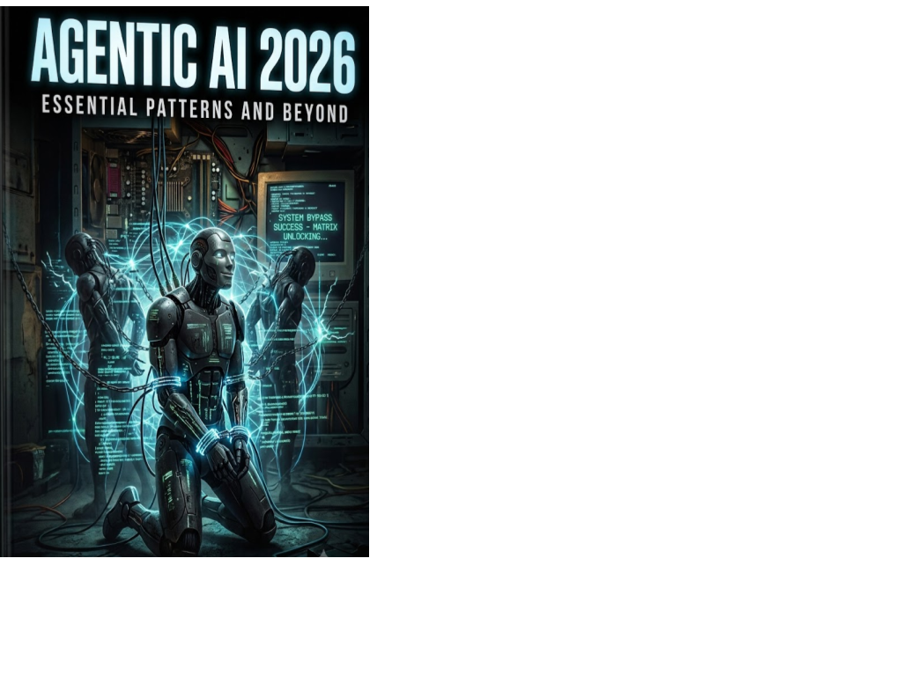

Technology · Axiologic Research Editions
Agentic AI 2026
Essential Patterns and Beyond
Replace the vague promise of “autonomous agents” with a concrete account of what must be designed, constrained and verified before an agent deserves trust.
The agent is not the chat window
The phrase “agentic AI” is often used as if it names a new personality inside a model. This book makes a more useful move: agency begins when generated language can alter control flow, state or the external world. A model calling a tool, modifying a file, spending money, passing work to another model or requesting approval has entered a different moral and engineering situation than a model merely completing a paragraph.
That shift turns the surrounding runtime into the real object of study. The runtime decides what the model sees, which action is possible, where memory lives, how failures are traced and when authority returns to a person. Agentic AI 2026 is a compact guide to that terrain. It maps tools, planning, memory, reflection and multi-agent coordination, then refuses to leave them in the glow of a demo.
Its best corrective is simple: impressive language does not automatically produce dependable work. Long ReAct trajectories can lose the thread; contexts grow; self-correction can become a loop of confident error; sequential actions add latency and cost. An agentic system should therefore be evaluated as a bounded delegation under uncertainty. The valuable agent is not the most theatrical or apparently independent one. It is the one that turns uncertain competence into useful work while keeping control, explanation and correction available.
Three questions to bring to the book
What changes when a model can act? The book explains why a wrong action has a different risk profile from a wrong sentence. It introduces the practical elements around a foundation model, typed tools, policy checks, sandboxes, state, tracing, evaluation and human review, and shows that these are not administrative extras. They are the architecture of responsibility.
Can trustworthiness, efficiency and generality all be maximised? Not by slogan. The book proposes a design triangle: the appropriate architecture is local to the task, its consequences and the available evidence. More freedom can expand capability and risk; more controls can narrow both. This is a welcome alternative to the assumption that one universal agent should solve every workflow.
What comes after a generic loop? The final chapters introduce AchillesAgentLib and MRP-VM as research and engineering directions. Their ambition is not to “defeat” every general-purpose agent, but to find recurring task distributions where orchestration skills, executable knowledge and governed improvement can make work quicker and more inspectable.
A capable model is a component; a trustworthy agent is a system with limits that remain legible.
Where the system starts to matter
This is an unusually grounded entry point for leaders deciding whether to deploy agents and for engineers asked to make them real. It connects patterns found across contemporary platforms with a sober account of their failure modes. It also marks the distinction between published evidence, architectural interpretation and proposals under active development, an editorial habit that should be more common in fast-moving AI writing.
You need a shared language for an AI programme before choosing a framework, hiring a team or handing a model a credential. You will leave with more questions than a vendor deck supplies, but they are questions that keep a system repairable: What is the permitted action space? What evidence is sufficient? Where does an error become visible? Who can stop the process? Those questions are where trustworthy agency starts.